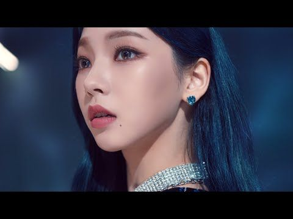

KARINA (카리나)
Yu Ji-min (Hangul: 유지민), also known by her stage name Karina (Hangul: 카리나), is a member of the South Korean girl group aespa and the female unit GOT the beat.
CAREER
Pre-debut
Karina was active on Social Media and was a former ulzzang recruited by an SM casting manager and she became an SM trainee in 2016. In February 2019, Karina appeared in Taemin's "Want" music video and also acted as dancer for the song's promotional stages. On November 1, 2020, she performed alongside EXO’s Kai for the virtual showcase held by Hyundai Motors and appeared with him in 'Beyond DRIVE - The all-new TUCSON', a collaboration virtual showcase between Hyundai Motor Company and SM Entertainment.
2020: aespa debut
On October 27, 2020, S.M. Entertainment revealed Karina as the second member of aespa.
2021: GOT the beat debut
At the 2021 Mnet Asian Music Awards, Karina opened the award show alongside some 4th generation idols with a collaborated special dance performance.
On December 27th, it was announced that Karina will be debuting in the first unit, GOT the beat, of the female project group, Girls On Top. She will be debuting alongside, Winter, BoA, Taeyeon and Hyoyeon of Girls' Generation, and Wendy and Seulgi of Red Velvet. They will be performing their debut digial single, "Step Back", at the SMTOWN Live 2022 : SMCU Express@Kwangya online concert on January 1, 2022 before the offical release on January 3, 2022.
TRIVIA
- Special Abilities: Halli Galli and picking things up using feet.
- Weakness: Scaredy cat, poor memory
- Nicknames: Rina, Karomi.
- Favorite Words: kiyeowo (cute), ppueng, ueng.
- Favorite Color: blue.
- Favorite Season: spring.
- Favorite Animals: cats that act like dogs, tigers, crocodiles, and sharks.
- Favorite Food: donkatsu (pork cutlet), carbonated drinks, jelly, and butter caramel pringles.
- Favorite Movie: Tangled, Frozen.
- First impression of members: ⁍ Giselle: greets her very shyly
- She have habits of cracking her knuckles and purse her lips.
- In order to relieve stress, she likes to eat good food, go shopping, and reading in a quiet place.
- She says her weakness is having bad memory and being shy.
- The other members voted her as most coward because she gets scared at small sounds.
- She collects lipsticks and loves giving lipsticks as birthday presents.
- She wants to learn how to cook, makeup, and producing.
- She is Catholic, and her name “Karina” came from her baptism name “Katarina”. ⁍She wears her rosary ring during important schedules.
- She likes green tea and barley tea.
- She does not like Americano because it's too bitter.
- She was the second member to be revealed.
- She appeared in Taemin's "Want" music video as a back-up dancer. She also promoted with him.
- She was confirmed to be a trainee in October 2020, when the company took legal action on malicious rumors about her.
- Before joining SM Entertainment, Karina trained at the BORN Star Training Center as a Vocalist.
- Karina got casted through a direct message from a SM recruiter on Instagram. At first she thought it was fake until they sent their business card.
- Karina was actively doing covers, including English songs and dance covers. She did a cover of Jennie's part in Blackpink's "Boombayah".
- She starred in the live virtual showcase for Hyundai's Tucson along with Kai of EXO.
- She has an older sister.
- She uses the iPhone 11 Pro silver.
- Her stage name "Karina" was chosen out of several different candidates. Others included 우아/Woo Ah (elegant), Jasmine, 지온/Zeon.
- She was active on SNS, and was cast by a talent agent who sent her a direct message. The page is now inactive.
- She is scared of pigeons but like eating chicken. She also likes snakes. She is scared of fish but likes eating sashimi.
- She likes playing old-fashioned pranks.
- She is observant, and explain things well for Ningning when she was learning Korean.
- The first concert she saw was Girls Generation, she saw it when she was already an SM Entertainment trainee.
- She is bad at PUBG.
- Both Karina and Giselle can't ride on rollercoasters.
- During the production of Black Mamba, a designer called her as Chae Ri Na, a former member of a co-ed group called "Roo'ra."
- She is a fan of SM Entertainment Idols, and knows every artist's birthdays. She even met Shindong, Heechul and Choi Sooyoung before even become a trainee.
- She has very sensitive hearing, especially around Ningning and Winter.
⁍ Winter: "Wow, really small..."
⁍ Ningning: At first I thought she was an unnie so I spoke to her with honorifics for three weeks.
Æ COUNTERPART
Æ KARINA
æ-Karina (stylized as æ-karina or æ-KARINA) is a virtual member of aespa. She is the virtual counterpart to Karina. æ-Karina was first revealed during a press conference on October 28, 2020. Her and Karina together are referred to as MY KARINA.
TRIVIA
- She can speak both Korean and English.
- She met Karina on SYNK and were brought together by NAVIS.
- She appears in the music video of "Black Mamba".
VIDEOS
Aespa 에스파 'MY, KARINA'
Aespa 에스파 - 'SYNK, KARINA' 
Personal Information
Birthname: Yu Ji-min (유지민)
Birthplace: Bundang-gu, Seongnam-si, Gyeonggi-do, South Korea
Birthdate: April 11, 2000 (age 22)
Height: 167.8 cm
Weight: 45 kg
Blood Type: B
Zodiac Sign: ♈ Aries
Nationality: Korean
Occupation: Singer
Occupational Information
Position: Leader, Main Dancer, Vocalist, Lead Rapper, Face of the Group
Avatar: æ-KARINA
Signature: 
Symbol: Heart ❤
Ability: Rocket Puncher
Active: 2020–present
Agency: S.M. Entertainment
Associated acts: AESPA